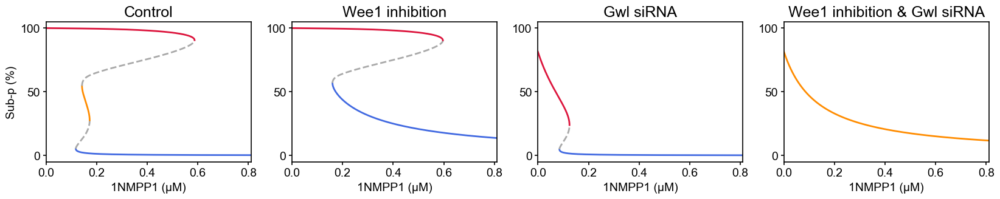

Bifurcation Analysis
A numerical study of the changes in the dynamics and stability of a system upon variations in its parameters.

Procedure for stability analysis at fixed points
Consider the following system of ordinary differential equations:
\[\dfrac{dx}{dt} = F(x)\]
Determine the fixed point vector, $x^*$, solving $F(x^*) = 0$
Construct the Jacobian matrix, $J(x) = \dfrac{\partial F(x)}{\partial x}$
Compute eigenvalues of $J(x^*)$: $|J(x^*) − λE| = 0$
Conclude on stability or instability of $x^*$ based on the real parts of eigenvalues
- All eigenvalues have real parts less than zero → $x^*$ is stable
- At least one of the eigenvalues has a real part greater than zero → $x^*$ is unstable
Usage
See examples/bifurcation.